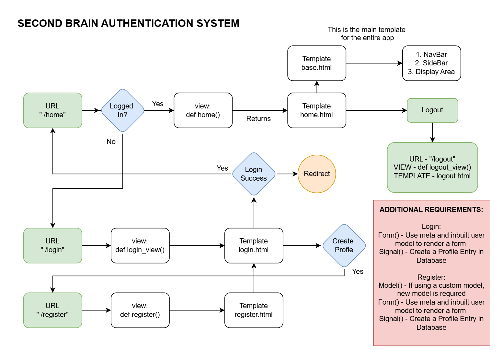
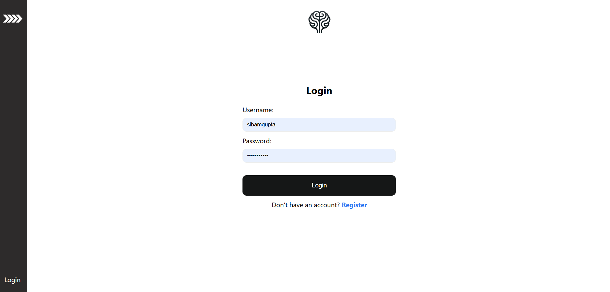
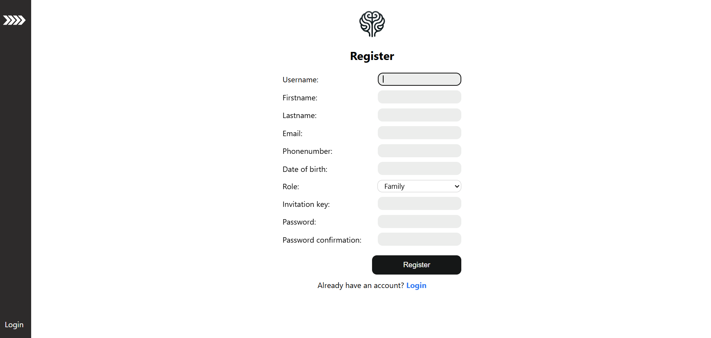

Custom Authentication System
Motivation
The custom authentication system is designed to provide a secure and streamlined user experience. Significant time has been invested in mastering both Django’s default and custom authentication mechanisms.
Specifications
Intended Functionality
User Login
User Logout
User Registration
App Logic and Flowchart
{kind=link}
UI/UX Diagram
 {kind=link}
{kind=link}
Development Notes
Code Notes: Inline comments and specific implementation details.
Useful Links: Links to Django documentation and other relevant resources.
Documentation
The custom_auth app handles user authentication, including registration, login, and profile management. This app extends Django’s default authentication system by adding custom user roles and profiles.
Features: - Custom user roles (Family, Friends, Acquaintance) - Invitation key system for user registration - Profile management with image upload and resizing
Commit History
Date: Jan 21st - Initial commit with basic layout setup.
Further Thoughts
Reflections on the implementation process and future improvements.